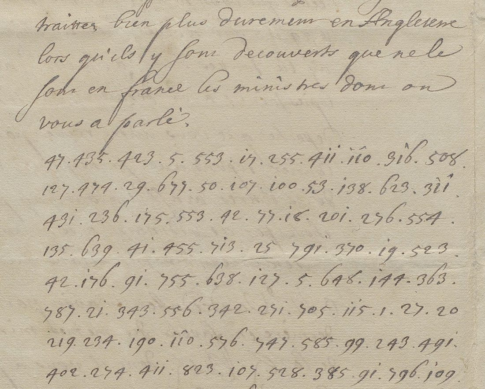
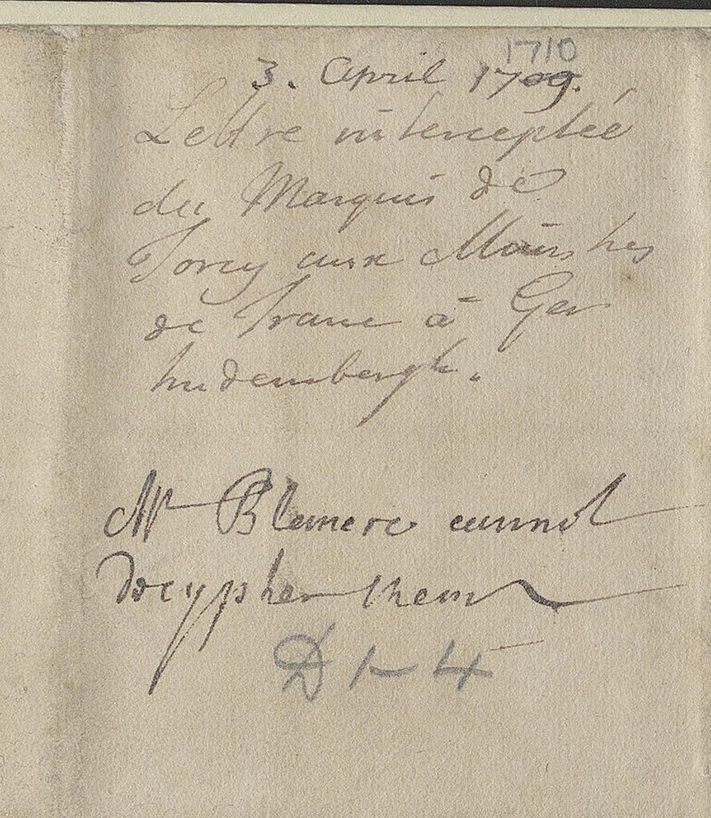
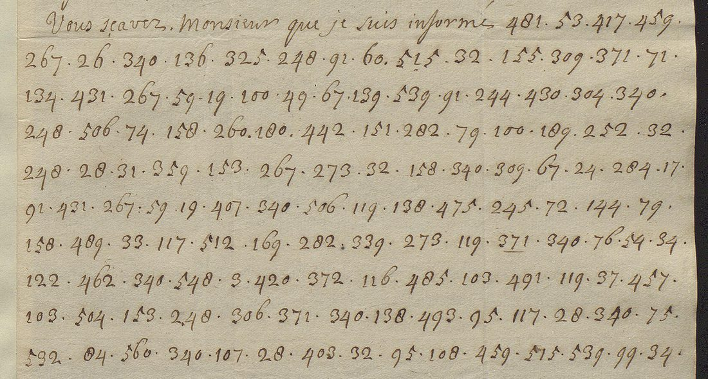

At a glanceNot solved · 0 of 863 code groups
- The letters
- Torcy, Louis XIV’s foreign secretary, to the French plenipotentiaries at Geertruidenberg (the maréchal d’Huxelles and the abbé de Polignac), Versailles, 3 April 1710. And a copy of a letter from the maréchal de Villars to Polignac, written at the camp of Arleux on 1 June 1710. Both were intercepted.
- Where
- British Library, Add MS 61575 (Blenheim Papers), ff. 38–41 and f. 44; DECODE R8755 and R8756. Torcy’s letter is endorsed “Mr Blencowe cannot decypher them”.
- The ciphers
- Two different numerical codes. Torcy’s: 690 groups, 285 distinct, values 1–823, a two-part code of 800 or more values with homophones. Villars’s: 173 groups, 106 distinct, values 3–560.
- How it was tried
- The DECODE transcriptions were checked against the images and corrected. The keys in the same volume (R8766, R8767, R8768), the French two-part code DECODE R587, Tomokiyo’s 1710 Desmarets table and the War-ministry keys of BnF fr. 6204 were tried. None fits either letter.
- What was added
- The clear opening of Torcy’s letter, which DECODE’s transcription leaves out, transcribed; the letter identified in Legrelle, who cites the French copy; DECODE’s sender and receiver for the Villars letter corrected.
- Still open
- Both cipher passages. The French file copy of Torcy’s letter is in the Archives des Affaires étrangères, Correspondance politique Hollande 223, which is not online.
01 The letters
In the spring of 1710 Louis XIV sent the maréchal d’Huxelles and the abbé Melchior de Polignac to Geertruidenberg, in Holland, to negotiate peace with the Dutch on behalf of the Allies. The talks failed in July. Some of the French correspondence was intercepted and passed to the English, and two cipher letters from it are now in the Blenheim Papers at the British Library, Add MS 61575.
Torcy to the plenipotentiaries, 3 April 1710 (ff. 38–41, DECODE R8755, seven images). It opens in clear on f. 38r and the top of f. 38v, then turns to figures: 17 lines on f. 38v, then ff. 40r, 40v and 41r, ending in the clear “Je suis &c”. Folio 39r is blank and 39v carries the endorsement. The clerk dated the endorsement “3 April 1709”; a later hand corrected it to 1710, which is right: the letter itself is dated 1710 and Legrelle cites it under that date.

The clear part answers two letters from the plenipotentiaries (of 27 and 29 March), says that the long despatch they will have received by their courier answers the main points, and then turns to a request from the Dutch deputy Vanderdussen for the Protestant ministers held in France. Torcy replies that they are not in the galleys but shut up in castles for preaching to the new converts against the King’s orders; that it is a matter of the King’s ordinances in which foreigners have no say; and that priests are treated far worse in England. The opening:
A Versailles le 3 avril 1710. Depuis le depart de vre courier, Messieurs, j’ay receu la lettre que vous m’avez fait l’honneur de m’ecrire le 27 du mois dernier; celles que vous m’avez adressée pour le Roy le 29 me fut rendue hier au soir et je les ay lu toutes deux a Sa Mte avec les copies jointes a la derniere. La longue depeche que vous aurez receue par vostre courier repond aux principaux articles de ces lettres, ainsi j’aiouteray peu de chose par cet ordinaire a ce que vous scavez presentement des intentions du Roy.
The whole clear part is in torcy_clear.txt. Then the figures begin, and the secret part of the letter is in them.

Villars to Polignac, 1 June 1710 (f. 44, DECODE R8756, two images). A copy headed “Copie d’une Lettre du mareschal de Villars a l’Abbé de Polignac, en datte du Camp d’Arleu le 1er Juin 1710”. A clear paragraph says that the enemy have gathered all their forces in their entrenchments and that Villars cannot draw them out to battle; then “Vous scavez, Monsieur, que je suis informé” and 173 groups of figures, and a clear close. A modern note on the page reads “with W. Blencowe 5 June 1710”.

02 The two codes
DECODE holds a transcription of each letter (Satoshi Tomokiyo’s, the files his Cryptiana article links to, which are dead there). Both were compared with the images line by line. Torcy’s agrees with the manuscript apart from notation: “11^0” is 110, “31^6” is 316 and “311^” is 311 (the caret marks a 1 written like a dotted i), and “7*29” is 729, which the repeat “288 729” settles. Struck groups were left out. The Villars transcription has one misread figure (575 for 515) and an underline taken for a gap.
- Torcy: 690 groups, 285 distinct, values 1–823. The commonest group, 50, is only 1.7% of the text (twelve times), the index of coincidence is 0.0042, and there are only two repeated trigrams (19 523 42 and 46 576 135) and no longer repeats. That is a two-part code of 800 or more values with homophones, the large Foreign-Office type of the period. Its nearest relative in the same volume, the Torcy–Petkum code of 1709 (R8766), has 774 values in a grid ruled to 850.
- Villars: 173 groups, 106 distinct, values 3–560. Group 340 occurs ten times, 28 five times, and 32, 91, 158, 248, 267 and 371 four times each. Tomokiyo had already noted that the two letters use different ciphers, and the value ranges confirm it.
03 What was tried
Before anything else, a search for an existing reading. Tomokiyo’s page on Blencowe’s work (blencowe2.htm, last changed November 2024) lists both letters as having no decipherment and gives only their frequent groups. No edition or decipherment turned up online. Then every key that could plausibly be the right one:
- R8766, the Torcy–Petkum code of 1709, which reads the Petkum letters in the same volume (R8748–R8752). In it “de” is 43 or 140. Torcy’s letter has 43 once and 140 never, and its second commonest group, 42, is “correspondance” in R8766. Not the same assignment.
- R8767, a one-part code of 1–996 with English names (Dartmouth, Devonshire, the Church of England), about 1712–14. Its “de” is 215, which Torcy’s letter does not contain, and a one-part code does not produce Torcy’s spread of homophones.
- R8768, the marquis de Rose’s code (1–578, “de” = 12), with Jacobite names of 1715–18. The Villars letter has no 12, and the names are after 1714.
- DECODE R587 (The National Archives, SP 106/7), a French two-part code of about 800 groups. Applied to Torcy it gives a value for 483 of the 690 groups and the result is word salad about Livonia, Prussia, Berlin and Keyserlingk: a code for the North, not this one.
- Tomokiyo’s table 11B, the code of Desmarets’s letter of 4 June 1710 on the same negotiations (see Desmarets 1710), about 190 values from his published table. Torcy’s letter comes out as nonsense. In the Villars letter it covers 41 of 173 groups, also as nonsense, and the Villars code’s commonest group, 340, is not in it.
- BnF fr. 6204, the War ministry’s keys. The “Sixième Clef a Chiffrer” (ff. 31–32) has “de” as 400, 411 and 423; Torcy’s letter has “423 411” twice, which would read “de de”, so it is not that key. For the other keys in the volume and the 1702 Usson code, the values Tomokiyo gives for “de” occur 0 to 7 times in Torcy’s 690 groups, far too few for the commonest word in French. They were not transcribed further.
The sibling records were opened as well: all of Add MS 61575 on DECODE, R8746–R8774. The Petkum letters of 1709 are in R8766’s code; the anonymous letter of 10 February 1710 (R8753, R8754), which Blencowe partly deciphered, uses a small code reaching about 409; the other keys in the volume (R8757–R8770) are English or later than 1711. No page in either record is a decipherment.
Printed sources give the context but no crib. Alfred Legrelle, La diplomatie française et la succession d’Espagne, vol. 4, p. 546, quotes the clear sentence about the priests in England and cites “Torcy aux plénipotentiaires, 3 avril 1710” in Hollande, t. 223, the French ministry’s file of the negotiation; he quotes nothing from the cipher. Torcy’s Journal inédit for 30 March to 3 April records the council of 30 March and the courier sent on the 31st, which carried the “longue depeche” of the clear text (the King’s letter of 31 March), and the plenipotentiaries’ letter of 29 March read to the King on the 3rd, but gives no wording to match. Villars’s Mémoires (ed. Vogüé), vol. 3, print his letters to Polignac of 24 May and 28 June 1710 and his letter to Voysin of the same 1 June, but not this one.
04 Why it resists
Nothing reads, so there is no seed to extend. Torcy’s 690 groups are spread over 285 values of a code of 800 or more, most of them seen once or twice; with homophones and no long repeats there is nothing for a ciphertext-only rebuild to fit, and the printed context gives themes, not words. The Desmarets letter of the same weeks (471 groups) became readable only with a table reconstructed from its own decipherment. The Villars letter, 173 groups, is shorter still.
05 What remains
- Torcy, 3 April 1710, the cipher part (ff. 38v–41r, 690 groups): not read. Blocker: needs physical access. The French file copy, cited by Legrelle, is in Correspondance politique Hollande 223 at the Archives diplomatiques, La Courneuve, which is not digitised. A clear copy or minute there would serve as a crib and recover much of the code.
- Villars, 1 June 1710, the cipher part (f. 44, 173 groups): not read. Blocker: no key material. A different code with no key found, and too short to attack without one.
- A lead not followed here: Tomokiyo gives “de” = 56 both for the anonymous letter of 10 February 1710 (R8753/R8754) and for the Desmarets code. If those are one code, Blencowe’s partial decipherment on f. 29 could extend the Desmarets table. It does not bear on these two letters.
06 Sources
- British Library, Add MS 61575 ff. 38–41 and f. 44, DECODE R8755 and R8756 (images by login). Sibling records R8746–R8774; keys R8766, R8767, R8768.
- DECODE R587, The National Archives SP 106/7, French two-part code.
- S. Tomokiyo, Cryptiana, “Blencowe” (blencowe2.htm) and Cipher Used in Louis XIV’s Reign (11B, and the fr. 6204 keys).
- Bibliothèque nationale de France, fr. 6204 ff. 31–32, “Sixième Clef a Chiffrer”, via Gallica.
- A. Legrelle, La diplomatie française et la succession d’Espagne, 1st ed., vol. 4, pp. 544–547.
- Torcy, Journal inédit, ed. F. Masson (1884), 30 March–3 April 1710.
- Villars, Mémoires, ed. de Vogüé, vol. 3, appendix, nos. 48–52.
Transcriptions (torcy_groups.txt, villars_groups.txt, torcy_clear.txt), the DECODE documents, notes and profile: targets/geertruidenberg/.